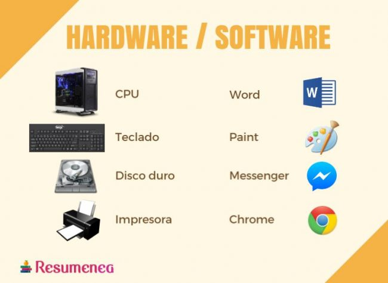

Software y Hardware
Software
Se conoce como software o logicial al soporte lógico de un sistema informático, que comprende el conjunto de los componentes lógicos necesarios que hacen posible la realización de tareas específicas, en contraposición a los componentes físicos que son llamados hardware. La interacción entre el software y el hardware hace operativo un ordenador (u otro dispositivo), es decir, el software envía instrucciones que el hardware ejecuta, haciendo posible su funcionamiento.
Los componentes lógicos incluyen, entre muchos otros, las aplicaciones informáticas, tales como el procesador de texto, que permite al usuario realizar todas las tareas concernientes a la edición de textos; el llamado software de sistema, tal como el sistema operativo, que básicamente permite al resto de los programas funcionar adecuadamente, facilitando también la interacción entre los componentes físicos y el resto de las aplicaciones, y proporcionando una interfaz con el usuario.
El software, en su gran mayoría, está escrito en lenguajes de programación de alto nivel, ya que son más fáciles y eficientes para que los programadores los usen, porque son más cercanos al Lenguaje natural respecto del lenguaje de máquina.3 Los lenguajes de alto nivel se traducen a lenguaje de máquina utilizando un compilador o un intérprete, o bien una combinación de ambos. El software también puede estar escrito en lenguaje ensamblador, que es de bajo nivel y tiene una alta correspondencia con las instrucciones de lenguaje máquina; se traduce al lenguaje de la máquina utilizando un ensamblador
Hardware
La palabra hardware en informática se refiere a las partes físicas, tangibles, de un sistema informático, sus componentes eléctricos, electrónicos, electromecánicos y mecánicos. Los cables, así como los gabinetes o cajas, los periféricos de todo tipo, y cualquier otro elemento físico involucrado, componen el hardware o soporte físico; contrariamente, el soporte lógico e intangible es el llamado software.
El término es propio del idioma inglés, y su traducción al español no tiene un significado acorde, por tal motivo se lo ha adoptado tal cual es y suena. La Real Academia Española lo define como «Conjunto de los componentes que integran la parte material de una computadora». El término, aunque sea lo más común, no solamente se aplica a las computadoras, también es a menudo utilizado en otras áreas de la vida diaria y la tecnología. Por ejemplo, hardware también se refiere a herramientas y máquinas, y en electrónica hardware se refiere a todos los componentes electrónicos, eléctricos, electromecánicos, mecánicos, cableados y tarjetas de circuitos impresos.
Otros ejemplos donde se aplica el término hardware son, en relación a los robots, así como en relación a los teléfonos móviles, las cámaras fotográficas, los reproductores digitales, o cualquier otro dispositivo electrónico. Cuando dichos dispositivos también procesan datos, poseen firmware y/o software además de hardware.